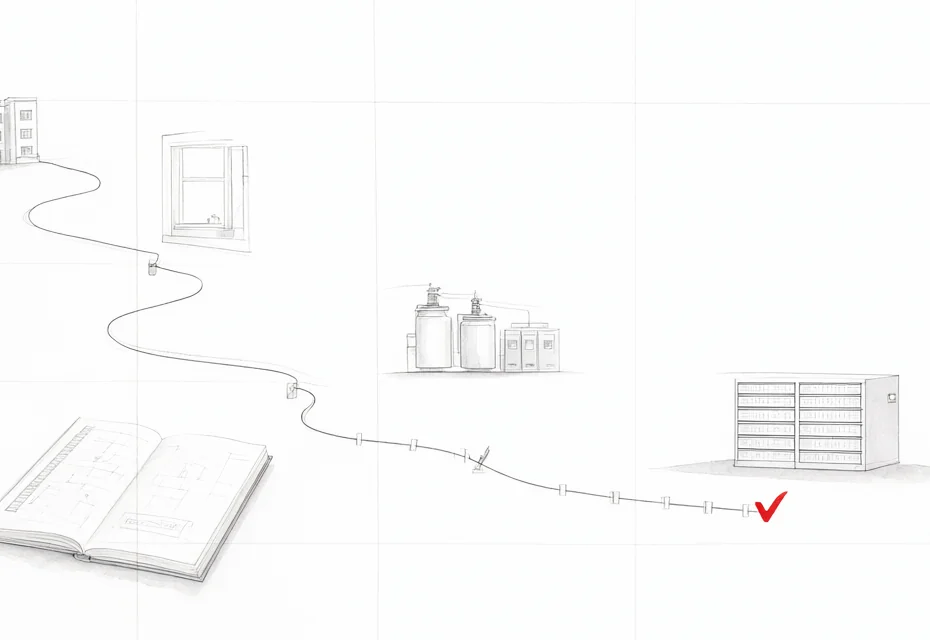

Underthe interface
I work on interfaces that carry real operational data — live fleet positions, orders against their planned timeline, a model that has to end in a readable sheet — and on the path underneath them: Go and Python services, React on top, AWS and Nginx holding it up.
Twelve years of that, from Bangalore to Berlin, in teams of ten to eighty-plus. Usually leading, which means the person who designs the screen also owns the deploy path and the error monitoring behind it.
Trajectory
Twelve years, one directionCloud Lead
Telemetry ingest, shared IAM and a gateway control plane for distributed energy sites across the German market — all of it in Go. Thirty engineers, one shared backbone, released against regulator-facing deadlines.
Senior Software Engineer
Interface revamp and performance for a fast-casual restaurant chain. Production deployment went from four minutes to three seconds, and error monitoring across the production environments makes a defect name its own root cause.
Frontend Engineer
Motion Track platform: live fleet tracking and the day’s operations, a Gantt of orders against real-time execution, and ELTCA reporting API outages to development and support together.
Lead Developer
Partplay, a music learning platform: built the web dashboard and the Go server applications, led the team across both clients, cut iOS sync from 0.01 s to 0.0002 s.
Software Engineer
Marketplaces and internal tools for Fairfax, Harrier Tours, Merck and Matt3r — see the work index.
B.Tech, Computer Science
First shipped product the same year: Search Box, cross-device sharing with per-user permissions, written in Go.
